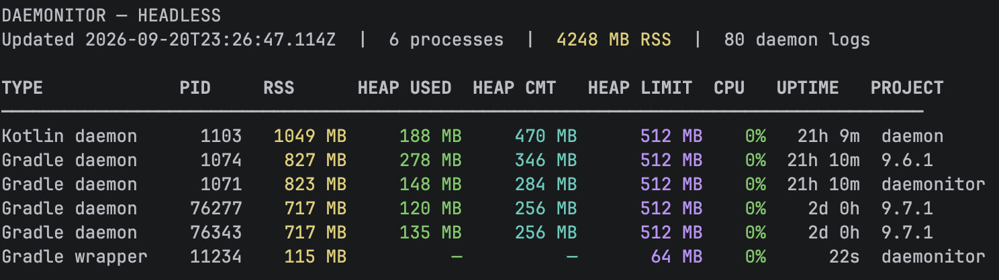

Reference
CLI options
daemonitor-cli is the standalone terminal monitor. It shares the desktop app’s
core runtime, SQLite database, and retention settings.
brew tap cdsap/tap
brew install daemonitor-cli
daemonitor-cli --help
Also available as daemonitor-cli-*.zip on
GitHub Releases
(requires JDK 21).
Flags
Everyday usage
- Press q to quit the interactive monitor.
- Over SSH, allocate a TTY:
ssh -t host daemonitor-cli. - First-poll CPU shows sampling placeholders until a delta exists;
0%means idle afterward. - Live heap shows
n/afor wrappers and test workers; daemons are probed when Attach/JMX succeeds.
